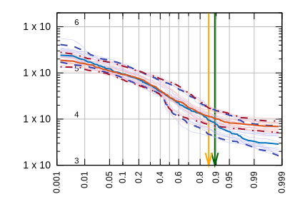
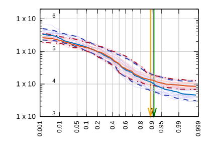
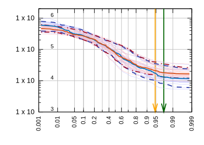
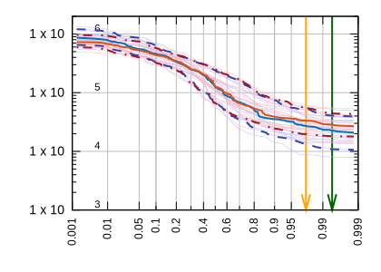

Generating Reports
So we write this template:
## Ohio River Routing Project
<!-- ---8<---:[smithland] -->
Our basin Outlet is at {_description:case(title):repl(Ky,KY)} with the total basin area {basin_area:f(1)} acre-ft.
<!-- ---8<--- -->
The lower part of the Ohio basin are specifically important to us. Those are:
| ID | Basin Area | Length to Outlet |
|---------|-------------:|-----------------:|
<!-- ---8<---:[greenup -> smithland] -->
| {_NAME} | {basin_area:f(1)} | {length:f(2)} |
<!-- ---8<--- -->
We used 4 locks and dams in the ohio river as representative locks and dams as below:
<!-- ---8<---:["willow-island",racine,markland,smithland] -->
- {_NAME:repl(-, ):case(title)?}

<!-- ---8<--- -->
Which makes the table only for the main-stem ohio:
network load_file("./data/ohio.network")
node load_attrs("./data/attrs/{_NAME}.toml")
network clip()
network render("./data/ohio-report.template")
Results:
Ohio River Routing Project
Our basin Outlet is at Ohio River at Smithland Dam Smithland KY with the total basin area 371802.2 acre-ft.
The lower part of the Ohio basin are specifically important to us. Those are:
| ID | Basin Area | Length to Outlet |
|---|---|---|
| greenup | 159430.2 | 2603.80 |
| meldahl | 183215.2 | 2450.59 |
| markland | 214850.9 | 2293.44 |
| mcalpine | 236250.2 | 2172.82 |
| cannelton | 249382.5 | 1993.72 |
| newburgh | 253065.6 | 1903.58 |
| evansville | 275482.9 | 1878.29 |
| jt-myers | 277962.5 | 1791.07 |
| old-shawneetown | 363656.8 | 1772.27 |
| golconda | 370942.3 | 1701.32 |
| smithland | 371802.2 | 1675.95 |
We used 4 locks and dams in the ohio river as representative locks and dams as below:
-
Willow Island

-
Racine

-
Markland

-
Smithland
